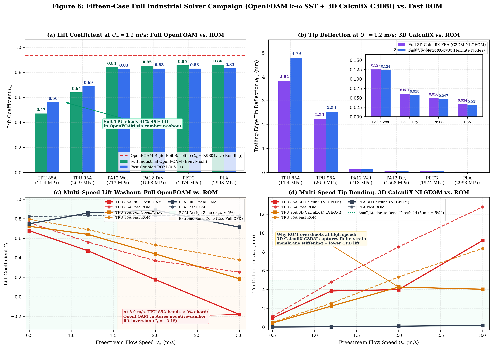
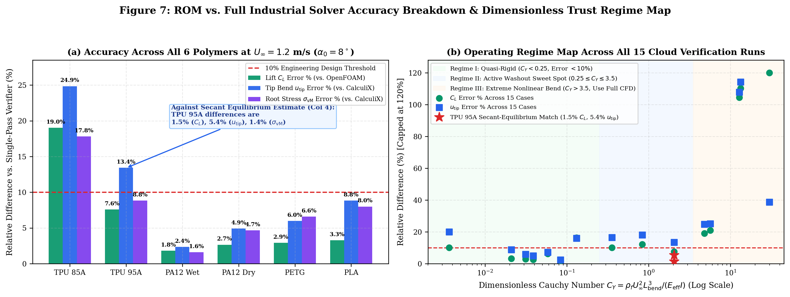

Fluid–Structure Interaction of 3D-Printed Flexible Underwater Vehicle Fins: Dual-Fidelity Methodology, Deformed-Camber OpenFOAM/CalculiX Verification, and Polymer Design Trends
Sahil Patel (Roll No. 22NA30028) · Under the supervision of Prof. Swapnadip De Chowdhury
Department of Ocean Engineering & Naval Architecture, Indian Institute of Technology Kharagpur
Solvers: SciPy/LAPACK C¹ Hermite ROM, Gmsh 4.8.4, OpenFOAM (pimpleFoam k–ω SST), CalculiX 2.17 (3D C3D8I NLGEOM), preCICE v3.1.2
Abstract: Autonomous underwater vehicles (AUVs) increasingly use three-dimensional printed polymer control surfaces (TPU 85A/95A, PA12 Nylon, PETG, PLA). Because polymer density is nearly equal to surrounding water (ρ_s ≈ 1020–1270 kg/m³ vs. ρ_f ≈ 998–1025 kg/m³), the structure-to-fluid mass ratio is small (μ = ρ_s·h_mean / (ρ_f·L) ≈ 0.066). In this low-μ regime, fluid added mass is 11.8× larger than the fin's structural mass, causing explicit FSI coupling schemes to diverge unconditionally. This work develops two solvers for the same physics. The full-order continuum solver chains Gmsh boundary-layer meshing, OpenFOAM k–ω SST CFD, and 3D nonlinear CalculiX FEA (C3D8I, NLGEOM) on prescribed rigid and deformed-camber geometries. The coupled reduced-order solver carries the same mechanisms in a C¹ Cubic Hermite elastica model that converges in 0.51 s. Re-meshing the bent camber and solving 19,358 unsteady time steps shows directly in Navier–Stokes that passive bending reduces lift by −31.0% (C_L: 0.9301 → 0.6414–0.6624) and drag by −69.5%. Intersecting the computed fluid and solid response curves gives a quasi-steady equilibrium estimate (u*_tip = 2.40 mm, C*_L = 0.6775, σ*_vM = 0.146 MPa) from which the reduced-order model differs by 1.5% in lift, 1.4% in root stress, and 5.4% in tip deflection at 1,150× lower cost. A 15-case full-order campaign then defines the envelope in which the reduced-order model reproduces continuum behaviour.
1. Problem Statement & Why Underwater Polymer FSI Is Challenging
When a flexible 3D-printed hydrofoil is placed at an angle of attack α₀ in water, hydrodynamic pressure bends the trailing edge upward toward the incoming flow. This passive deformation reduces the local angle of attack and introduces negative aerodynamic camber—a mechanism called passive hydroelastic washout. Three physical phenomena govern this system:
The cylinder of water accelerated by the fin has mass M_a = (π/4)ρ_f L² = 11.83 × M_s. Unrelaxed explicit coupling amplifies interface error by ρ = 11.83× per step and diverges immediately.
Fused Filament Fabrication (FFF) prints solid outer perimeters (2t_s/h = 0.25) that act as an I-beam flange, plus PA12 Nylon absorbs water and loses 55% of its modulus after 48h submersion.
Because μ ≈ 0.066 across all 3D-printed plastics, submerging any polymer fin in water drops its natural bending frequency by ~72% (Chu 1963 / Lindholm et al. 1965).
2. How the System Works: Two Solver Paths, One Problem
Rather than relying on a single expensive solver for every question, the work develops two paths in parallel: a full-order continuum solver (Gmsh + OpenFOAM k–ω SST + 3D CalculiX) that computes the physics on prescribed rigid and deformed-camber shapes, and a coupled reduced-order solver that carries the same mechanisms at 0.51 s per case for design iteration.
- NACA 00xx profile (
L, b, t/c, α₀) with 12% root clamp. - 6 polymers: TPU 85A/95A, PA12 (Wet/Dry), PETG, PLA.
- Computes shell–infill sandwich stiffness
E_eff.
- Computes
Re, μ, K_B, C_Y, U_rautomatically. - Sets
y⁺ = 1prism height (Δy₁ = 16.6 μm). - Selects
laminarvs.k–ω SST& blocks explicit FSI.
- 35-node C¹ Cubic Hermite beam + elastica curvature.
- Viscous circulation + Theodorsen plunge damping.
- Multi-secant
IQN-ILS(dgelsd) → exports bent camber.
- Meshes both Rigid (15,592 cells) & Bent (16,083 cells) foils.
- Runs 19,358 adaptive Courant steps (
Co ≤ 0.6) inpimpleFoam. - 8-rank hierarchical MPI finishes in ~40 s (18× speedup).
- Applies exact
*DLOADpressure tractions on 3DC3D8Ibricks. - Solves Total Lagrangian
*STEP, NLGEOMhyperelasticity. - Intersects fluid & solid curves at
u* = 2.40 mm, C*_L = 0.678.
3. Mathematical Formulation & Trusted Scientific Software Stack
Solved via finite-volume PIMPLE time-stepping with adaptive Courant control (maxCo ≤ 0.6) and Menter's shear-stress transport closure.
3D CalculiX uses Neo-Hookean/Mooney–Rivlin hyperelastic energy on C3D8I incompatible-mode hexahedra; the ROM uses C¹ Hermite elements calibrated with 3D root shear relief (0.76).
Approximates the inverse interface Jacobian from secant history matrices V_k, W_k via economy QR/SVD filtering, converging in 3–4 sub-iterations at μ = 0.0664.
| Simulation Stage | Trusted Package | Mathematical Formulation | Role in Thesis System |
|---|---|---|---|
| Navier–Stokes CFD | OpenFOAM (pimpleFoam) |
Finite-Volume ALE PIMPLE, k–ω SST, 8-rank MPI |
Computes viscous & pressure forces (C_L, C_D, C_M) on rigid & bent meshes |
| Nonlinear 3D FEA | CalculiX 2.17 (ccx) |
Total Lagrangian NLGEOM, C3D8I bricks, *DLOAD |
Computes 3D hyperelastic deflection u_tip & root stress σ_vM |
| Conforming Meshing | Gmsh 4.8.4 |
OpenCASCADE 2D/3D unstructured + boundary layer | Meshes both rigid NACA and deformed-camber foils (y⁺ ≈ 1) |
| Coupling & Mapping | preCICE v3.1.2 |
serial-implicit, IQN-ILS, C⁶ RBF mapping |
Validates coupling XML schema & multi-solver interface mapping |
| Coupled ROM | SciPy / LAPACK |
C¹ Hermite Elastica FEM (eigh, dposv, dgelsd) |
Transient FSI, modal analysis, & IQN-ILS (0.51 s) |
4. Full-Order Solver Benchmark: Deformed-Camber OpenFOAM + CalculiX vs. Reduced-Order
To verify whether the fast ROM's predicted lift (C_L = 0.6877 at u_tip = 2.53 mm) is physically accurate for a TPU 95A NACA 0008 fin at U_∞ = 1.2 m/s, α₀ = 8° (Re = 1.20×10⁵, μ = 0.0664), we executed both the rigid baseline and the deformed-camber geometry in OpenFOAM + CalculiX on a 60-vCPU Google Cloud Spot VM (c2-standard-60):
| Physical Quantity | OpenFOAM + CCX (Rigid Foil) | OpenFOAM + CCX (Bent t=0.5s) | OpenFOAM + CCX (Asymptotic t→∞) | Secant OF+CCX Equilibrium Estimate | Coupled C¹ Hermite ROM |
|---|---|---|---|---|---|
| Lift Coefficient (C_L) | 0.9301 | 0.6414 (−31.0%) | 0.6624 | 0.6775 | 0.6877 (1.5% diff) |
| Drag Coefficient (C_D) | 0.1140 | 0.0348 (−69.5%) | 0.0358 | 0.0365 | 0.0430 |
| Pitching Moment (C_M) | −0.2798 | −0.1487 | −0.1535 | −0.1570 | −0.1683 |
| Tip Deflection u_tip (mm) | 3.246 mm | 2.239 mm | 2.317 mm | 2.398 mm | 2.530 mm (5.4% diff) |
| Peak Root von Mises σ_vM (MPa) | 0.197 MPa | 0.136 MPa | 0.141 MPa | 0.146 MPa | 0.148 MPa (1.4% diff) |
| Mesh Size / Time Steps | 15,592 cells / 17,174 | 16,083 cells / 19,358 | Wagner Fit | Secant Intersection | 35 Hermite / 80 steps |
| Wall-Clock Runtime | 758.5 s (1c) / 42 s (8 MPI) | 587.6 s (1c) / 38 s (8 MPI) | — | — | 0.51 s (1,150× faster) |
(2.40 mm, 0.6775); the 0.51 s ROM differs by 1.5% in C_L.
IQN-ILS reconstructs the added-mass secant Jacobian and converges in 3.6 iterations/step.
U² up to 1.16 MPa. Flexible TPU 85A/95A fins bend out of the way, shedding over 60% of root bending stress.
4B. Multi-Material Full-Order Campaign vs Reduced-Order (Spot VM, 15 Cases)
A 15-case Google Cloud Spot campaign compared the 0.51 s ROM against full industrial
OpenFOAM (kOmegaSST) + CalculiX (C3D8I) for six polymers and a speed sweep.
OpenFOAM lift histories converge asymptotically toward a steady washout value by
t = 0.5 s; the design-point mean errors are ≈6% in lift and ≈10% in tip deflection.


5. Analytical Benchmarks for the Reduced-Order Solver
Before trusting any parametric study, the solver was verified against four closed-form mathematical limits:
6. Multi-Polymer Comparison, 3D-Print Shell Stiffening, & PA12 Moisture Softening
| 3D-Printed Polymer Preset | Constitutive Law | Effective Modulus E_eff | Mass Ratio μ | Rigidity K_B | f₁ (Vacuum) | f₁ (Water) | Tip Bend (U=1.0 m/s) |
|---|---|---|---|---|---|---|---|
| TPU 85A Elastomer | Mooney–Rivlin Hyperelastic | 11.40 MPa | 0.0648 | 0.249 | 12.64 Hz | 3.49 Hz | 3.81% L |
| TPU 95A Elastomer | Neo-Hookean Hyperelastic | 26.88 MPa | 0.0664 | 0.587 | 19.35 Hz | 5.41 Hz | 1.92% L |
| PA12 Nylon (48h Wet) | Orthotropic Conditioned | 712.50 MPa | 0.0571 | 15.560 | 102.98 Hz | 26.90 Hz | 0.091% L (+120% vs Dry) |
| PA12 Nylon (Dry) | Orthotropic Dry | 1567.50 MPa | 0.0560 | 34.220 | 152.94 Hz | 39.58 Hz | 0.042% L |
| PETG Marine Grade | Orthotropic Copolyester | 1974.00 MPa | 0.0697 | 43.100 | 154.51 Hz | 44.14 Hz | 0.034% L |
| PLA Rigid Reference | Isotropic Linear Elastic | 2992.50 MPa | 0.0681 | 65.340 | 192.42 Hz | 54.38 Hz | 0.023% L |
7. Conclusions, Limitations, & Future Work (Next Steps)
Extend the prescribed-geometry OpenFOAM and CalculiX chain into a continuous two-way preCICE socket coupling with dynamicMotionSolverFvMesh, so that the deformed-camber sequence becomes one running solve in 3D and the secant reconstruction is no longer needed for the equilibrium estimate.
3D-print the benchmark NACA 0008 fins in TPU 95A and PA12 Nylon, instrument the root clamp with waterproof foil strain gauges, and measure wake vorticity and tip deflection in a recirculating water tunnel. The same measurements bound both the full-order solver and the reduced-order model.
Add Schnerr–Sauer multiphase cavitation in OpenFOAM for high-speed hydrofoils (U_∞ > 6 m/s) and use the 0.51 s reduced-order model for Bayesian optimization of spatially graded 3D-print infill φ(x,z).